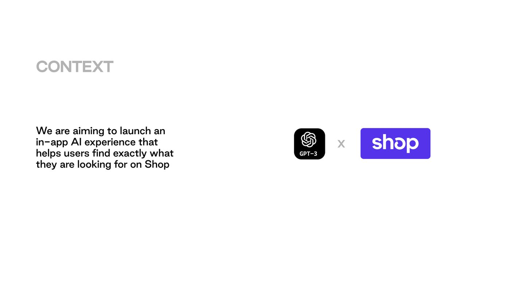
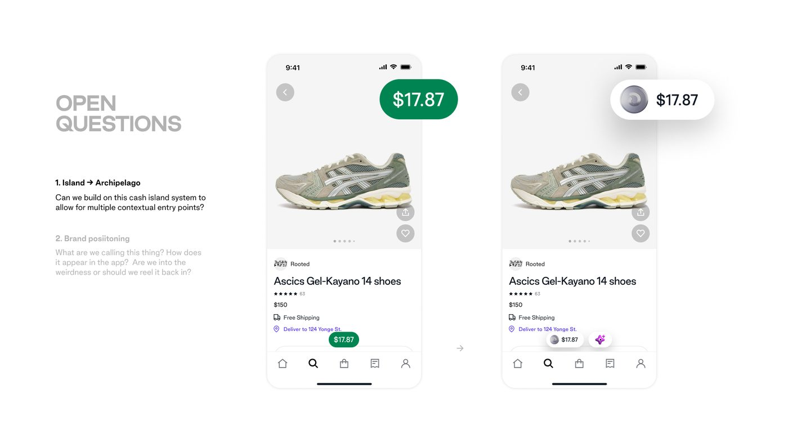
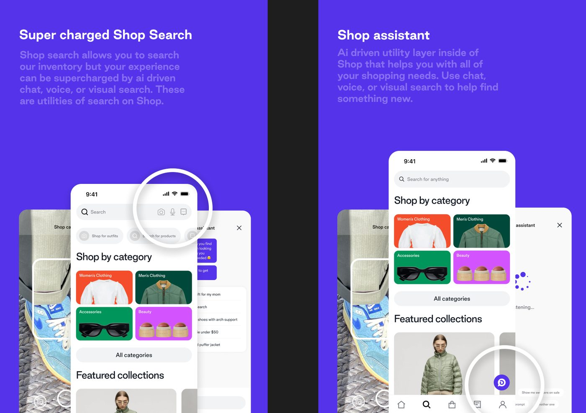
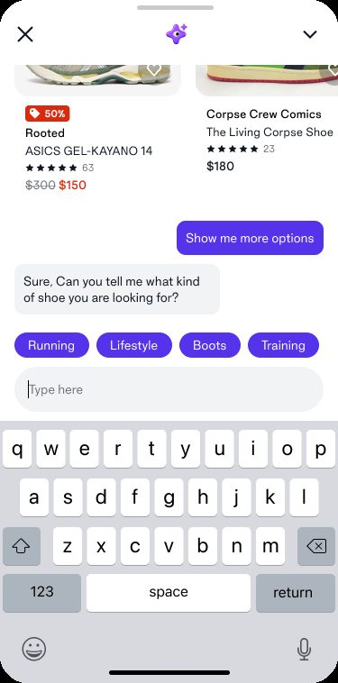
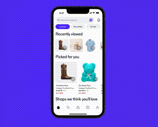
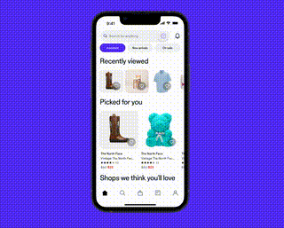
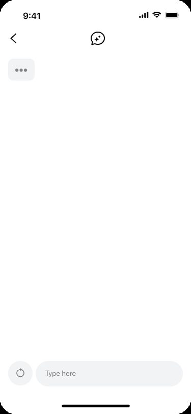
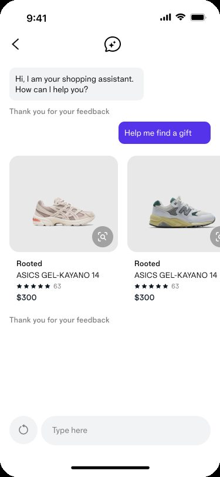
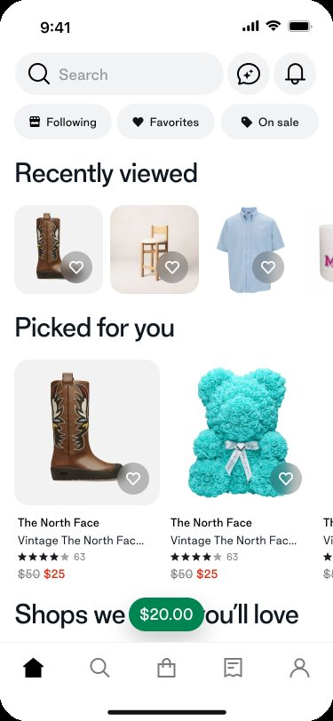

Shop Assistant
Prompt engineering and content standards for an AI shopping assistant inside the Shop app, one of the first four public ChatGPT API implementations, shipped to 100 million users.
The challenge
- Shop's search was pure inventory lookup: type a query, get a results grid. The team wanted to test whether an AI chat layer (GPT-3.5, weeks after OpenAI's ChatGPT API first became available) could actually help someone find the right product instead of only matching keywords.
- Internal codename "shopé," pitched plainly as "ChatGPT x Shop App." The aim: an in-app AI experience that helps users find exactly what they're looking for on Shop.
- How I knew it was real: keyword search can't hear intent. Someone typing "a gift for my mom" got a wall of results, not help. The open questions were captured as literal signed sticky notes at the time, how do we train the model to follow our tone-of-voice guidelines, how do we prioritize and categorize prompts, how does going back and forth work, where do the entry points live.
- The goal: help a shopper find the right thing through conversation, with the app's voice intact, not just swap one results grid for a chattier one.
- This was 0 to 1 under real time pressure. The API had existed for about a week when we started scoping it.


From here, you'll need a password
The scripts, the chat states, the demos, and what I learned are behind a password. Reach out and I'll send it over.
That is not it. Try again, or ask me for the password.
What I did
- Defined what the assistant actually was and pitched it in plain language. "An AI-driven utility layer inside Shop that helps you with all of your shopping needs, chat, voice, or visual search," positioned alongside a supercharged Shop search with camera, voice, and chat docked right in the search bar.

- Wrote the actual conversational scripts, past the concept stage. The assistant narrowing "the 45,873 shorts we have available on Shop" down through a specific opening question and quick-reply chips, or asking "can you tell me what kind of shoe you're looking for?" with category chips (Running, Lifestyle, Boots, Training). Those chips weren't invented, they mapped to Shop's existing product taxonomy, so a big part of the work was understanding that taxonomy and using it to surface the right categories based on where the conversation had gone.

- Owned the open design questions as signed artifacts: training the model to follow our tone-of-voice guidelines (the same three-point tone spectrum I built in Gravity), generating a first-time prompt list from Shop's real search data, categorizing and prioritizing prompts, handling back-and-forth, and where the entry points live. Real-time design thinking in writing, not reconstructed after the fact.
- Wrote end-to-end demos that show reasoning, not just retrieval. Asked for "a gift for my mom," the assistant reasons about the occasion and her style before recommending; asked for "an outfit Brad Pitt would wear," it explains the styling choices. The point was an assistant that thinks with you, not a fancier search box.


- Designed all eight states of the chat interaction, not just the happy path. Empty, prompts, keyboard focused, keyboard active, products returned, feedback unfocused, feedback captured, clear conversation. The boring-but-critical edge cases (what does it look like with nothing typed yet? after you clear the thread?) alongside the demo-able ones.


- Placed the entry point across three real product surfaces, the Home feed, browse-by-category, and search results, each with the same small purple assistant icon in the search bar, so it read as one consistent, always-available entry point rather than a chat screen bolted onto a single surface.

The outcome
- It shipped. Publicly, to 100 million Shop app users, on March 1, 2023, via a purple assistant icon in the search bar, with a web rollout two weeks later and independent press coverage at launch.
- Shopify was one of only four launch partners OpenAI named for the brand-new ChatGPT API itself, alongside Instacart, Snap, and Quizlet. Not "we tried ChatGPT eventually," but one of the first four public implementations of the API, ever.
- No public adoption numbers exist for this one, so the outcome is the launch itself: a first-of-its-kind integration, live to 100 million users, covered in the press. On this project, that is the metric.
- For the record, this 2023 Shop assistant is a distinct, earlier product from Shopify's later merchant-facing Sidekick and from the 2025 checkout integration. It predates both.
What I learned
- Writing for a model I couldn't fully control was new. In the first days the API existed, you couldn't just specify an output, you shaped the conditions and hoped. That reframed the job: less writing the answer, more designing the context and guardrails the model answers inside.
- So much of the scoping happened through naming. Debating what to call it, and whether to lean into the weirdness or reel it back in, was really us deciding what the product was. Naming isn't a label you add at the end, it's where a lot of the design actually gets decided.
- This was the first time I treated a model as something you design the surroundings for, rather than something you script. The instinct holds up, even with week-old tools. What I'd change now is starting from the content standards and how we'd evaluate quality, not from the demo.
There's always more behind a case study.